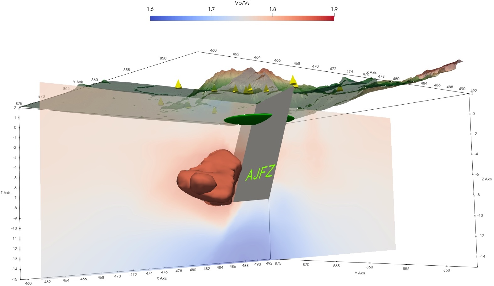
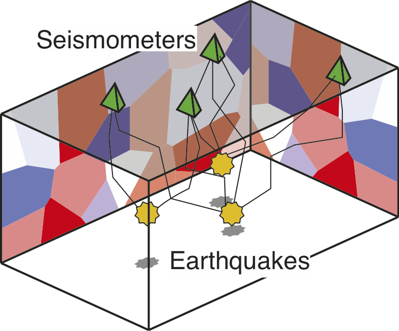

|
Andy Nowacki |
|
Ongoing projects
Subsuface imaging and uncertainty for geosolutions
As part of the Universty's Geosolutions Centre, we are working to improve seismic and geophysical imaging of the subsurface to include realistic estimates of uncertainty, and use these to better frame and test hypotheses about the subsurface.
VP/VS structure beneath Aluto volcano, Ethiopia. Yellow tetrahedra show the seismic stations used to construct the family of models. Clay cap (green disc) and topography are shown. Colour shows the mean VP/VS along a latitudinal slice, while the red isosurface shows regions where more than half of models have VP/VS > 1.8, defining the geothermal reservoir.
Building on the work begun in the REMIS project, we will use and extend methods to take seismic and other geophysical data and build probabilistic models of subsurface parameters such as VP/VS, but also the more fundamental parameters such as fracture density, porosity or permeability which are needed to better understand and make use of the ground.
Initially, we plan to take the following approach:
- Construct (or use if existing) baseline models of the subsurface from surface-wave dispersion and body-wave travel time measurements with uncertainties from Markov chain Monte Carlo (McMC) sampling. This is the most expensive but most accurate method for obtaining these sets of models, and serves as a benchmark. Sites for this work could include the Utah FORGE site or Aluto in Ethiopia.
- Develop approximate but faster methods such as those using variational inference for use with passive body-wave and surface-wave data, similarly as to what has been done with FWI methods, and benchmark the solutions against the ‘gold-standard;’ McMC solution.
- Develop the strategy to infer subsurface properties beyond seismic ones, giving full posterior distributions for parameters such as fracture density.
- In collaboration with project partners, develop the method to incorporate other geophysical data, such as megnetotelluric measurements or gravity data.
The project is planned to involve trips to collaborate with researchers in the US and Italy on seismic, magnetotelluric and gravity data, and to develop the work to be useful to academic and industry partners in the field of geothermal power. At the same time, it will involve travel to international conferences to present the work and build collaborations.
MC²: Mantle Circulation Constrained
A multidisciplinary 4D Earth framework for understanding mantle upwellings
The Leeds component of a NERC-funded four-year large grant to understand how the rocky interior of the Earth has evolved over the last billion years.

Mantle convection simulation, showing in red a contour of mantle temperature at 2800 K (about 3100°C). The green blebs show lower mantle regions of basalt, subducted to depth from the surface. Model courtesy Huw Davies, Cardiff University.
My contribution
In Leeds, our aim is to test how well our models of mantle convection match the present-day state of the Earth. We will use new observations of the small-scale structure of the mantle and compare these with large-scale seismic simulations, allowing us to decide which convection models best match the real Earth, and thus what the interior of the Earth looked like hundreds of millions of years ago.
Co-investigators
- Huw Davies, Cardiff University (Project leader)
- Andy Biggin, University of Liverpool
- Chris Davies, University of Leeds
- Ana Ferreira, UCL
- Paula Koelemeijer, Royal Holloway University of London
- Don Porcelli and Andrew Walker, University of Oxford
- Gareth Roberts, Imperial College London
- Oli Shorttle, University of Cambridge
- James Wookey, University of Bristol
Completed projects
REMIS – Reliable Earthquake Magnitudes for Induced Seismicity (NERC) (2017–2021)
A NERC-funded three-year project to quantify the uncertainty inherent in using seismic wave arrival times to jointly infer earthquake locations and magnitudes, and the seismic velocity structure of the subsurface.
Cartoon showing the joint event hypocenter–velocity tomography inference problem. The arrival times of waves from earthquakes at depth are the information we use. We perform fully non-linearised inference to obtain probabilities that a given event occurred within a certain volume and time, and also that any point in the subsurface has a certain range of velocities.
Co-investigators
- Andrew Curtis, University of Edinburgh
- Brian Baptie, British Geological Survey
Project researchers
- Corinna Roy, University of Leeds (PDRA)
A secret history of the Earth's mantle (2015–2018)
A Leverhulme Early Career Fellowship to study the history of the Earth's rocky mantle using seismic observations and modelling.